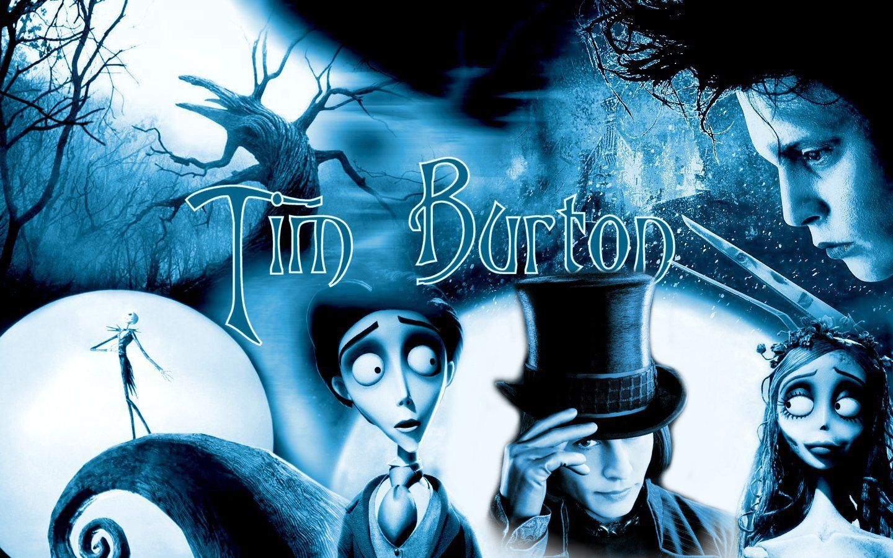
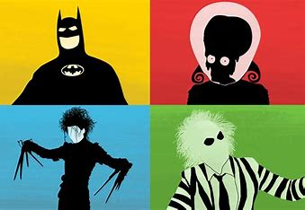

Halloween is right around the corner so why not talk about my favorite movies. The director Tim Burton creates some of my all time favorite films. I think the unique characters, clay mation, and music of the different films is what sparks my attention. I watch these films all the time regardless of the holiday I find his movies unique.
About one of my favorite films BeetleJuice. Beetlejuice is very strange involving life after death. The recently deceased couple are stuck in their own home unseen by the new family who have just moved in. The spirits of the deceased to not like the new family who have moved in and try to drive them out by hiring a malicious spirit. I find this movie humorous rather than scary I think because it is so unique that is why I like it.
© 2023 HTML Tim Burton Films